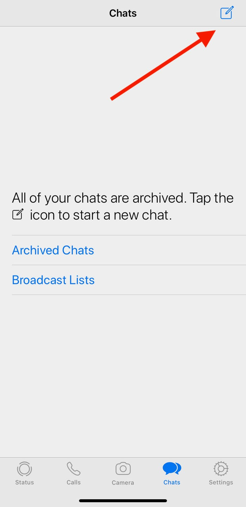
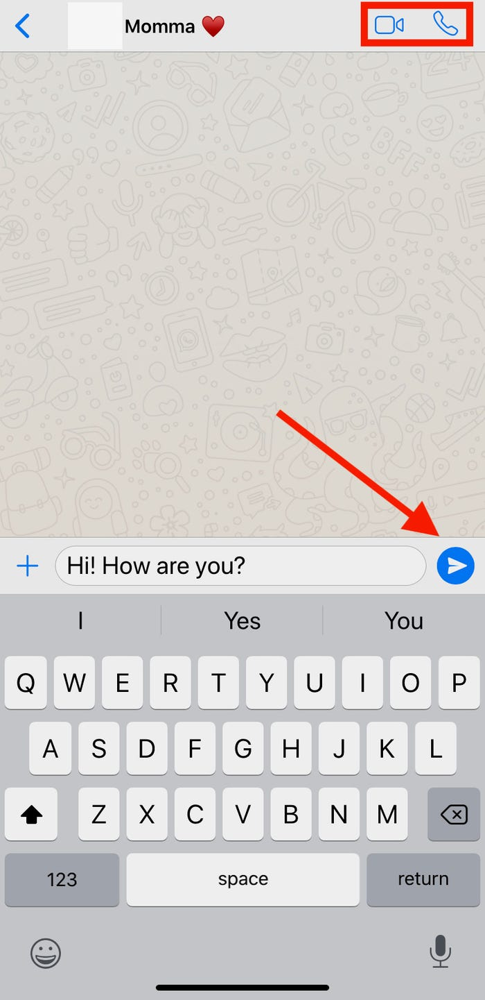

Step 1:
When you open WhatsApp, tap on the chats icon located at the bottom of the screen. This will be between the camera icon and the settings icon. At the top right, tap the new chat icon.
Step 2:
Tap who you want to send a message to from the contacts list. You can add more than one person to a chat by tapping the “New Group” option and then adding the contacts you want in the group.
Step 3:
Type your message, then tap the blue arrow next to the text box. You also have the option to voice call by tapping the phone icon at the top right of the screen or you can video call by tapping the camera icon at the top right of the screen.
Step 4:
You can also call contacts from WhatsApp by tapping the “Calls” icon at the bottom of the screen and then tapping the call icon at the top right of the screen. This will then open the contacts list and allow you to choose who you want to call.